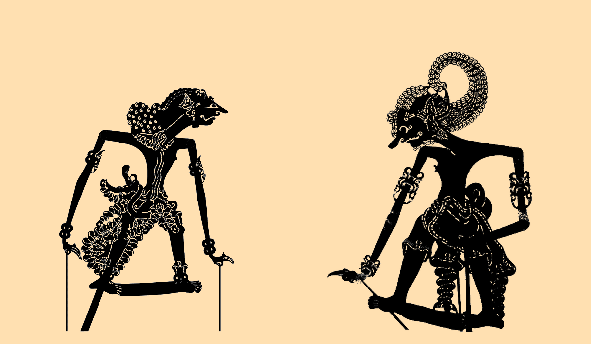

Inovasi Budaya & Teknologi Terbuka
Pertunjukan Wayang Kulit Interaktif e-DALANG
Menggabungkan seni tradisional wayang kulit dengan kecerdasan buatan pelacak gestur tangan (MediaPipe AI) serta sistem motor fisik (Arduino UNO Servo & Woodpecker GRBL Stepper).
